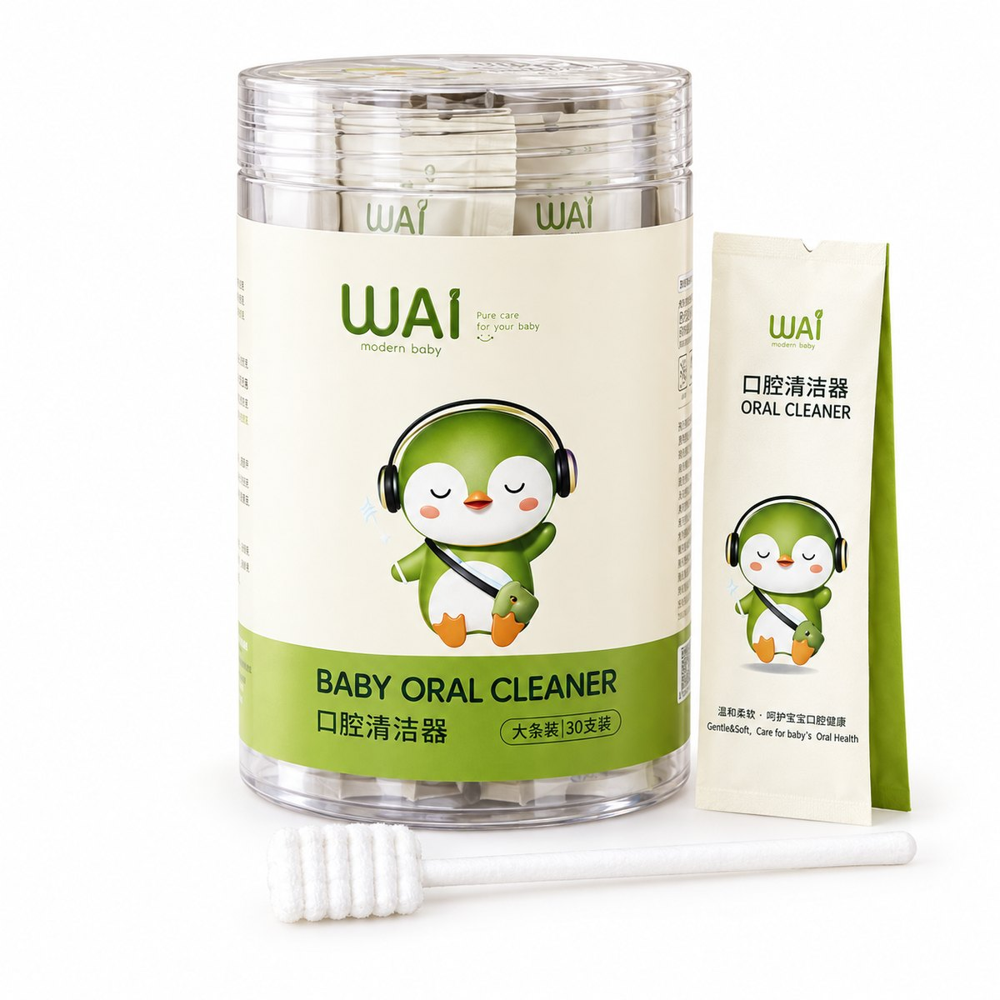
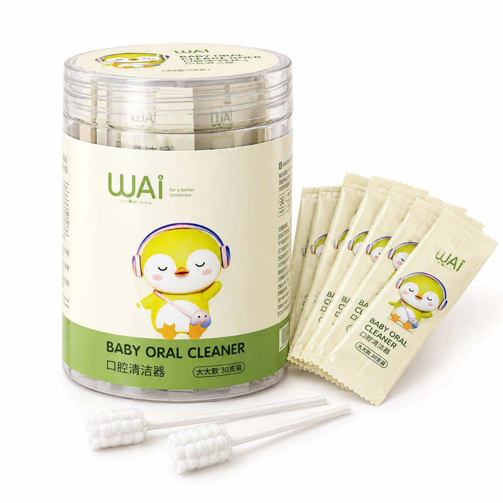

Que rơ lưỡi Wai
Hộp 30 que · Bé 0–24 tháng
Que rơ lưỡi đầu bông giúp mẹ vệ sinh lưỡi, nướu và khoang miệng cho bé nhẹ nhàng mỗi ngày. Mỗi que được đóng túi riêng nên luôn sạch sẽ, tiện mang theo khi ra ngoài.
| Chất liệu | Đầu bông vô trùng, khử khuẩn UV; tay cầm bằng giấy cứng cáp, dễ cầm. |
|---|---|
| Quy cách | Hộp nhựa trong 30 que, từng que đóng túi riêng. |
| Phân loại | Xanh cho bé 0–6 tháng, Vàng cho bé 6–24 tháng. |
Điểm nổi bật
- Đầu bông mềm, bo tròn, êm với khoang miệng non nớt của bé
- Đóng gói từng que, hạn chế tiếp xúc bụi bẩn trước khi dùng
- Hộp có nắp kín, bảo quản gọn gàng
Hướng dẫn sử dụng
- Mở túi, làm ẩm đầu bông bằng nước đun sôi để nguội.
- Nhẹ nhàng lau lưỡi, nướu và mặt trong má bé.
- Dùng một lần, bỏ que sau khi dùng.